Frame
A BJJ training journal built against the forgetting curve.
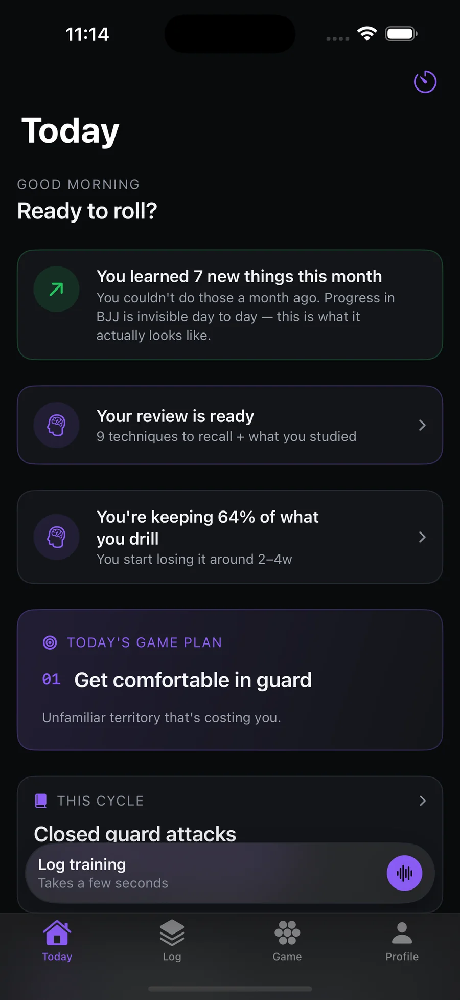
02 / FRAME
Frame is a native iOS training journal for Brazilian Jiu-Jitsu, made for the people who train two or three times a week and cannot tell from the inside whether any of it is working. Every screen on this page is the running app, on one phone, with nothing behind it.
Different belts, different excuses, one mechanism: when progress goes invisible between classes, people drift.
Belt-attrition figures are community estimates, not studies — we treat them as the shape of the problem, not proof of it. ~6M practitioners worldwide (Gymdesk); median UK adult membership £70/mo (Matador, 2026).
1For the individual
You are the one who has to decide, alone, whether six months of this is going anywhere. Frame turns that into a question with an answer.
2For the room
The cheapest growth in jiu-jitsu is the member you already have, kept one more year. A room that can see its own progress is harder to leave.
Built against the forgetting curve
A single session throws four or five details at you — the grip, the angle, the small correction that made the sweep finally work — and within a week almost all of them are gone. Frame is built around that decay rather than despite it.
Everything you log comes back on a schedule — a few days, then a week, then a month — timed to land just before you’d lose it. Nothing to revise, no deck to sit down with. Retention is the product, and it is the one thing a paper notebook has never done.
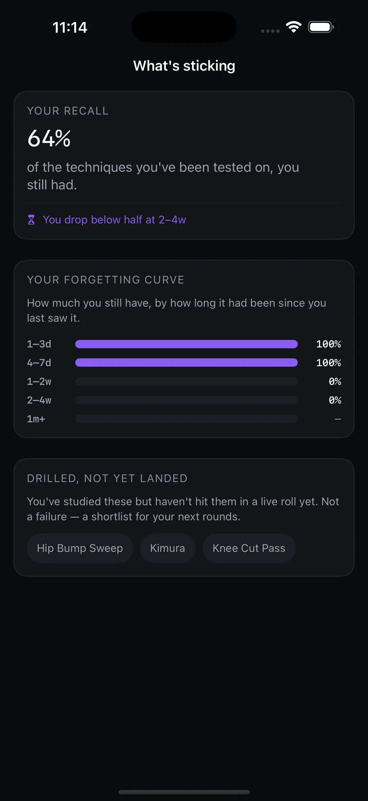
The log you’ll actually keep
Everyone knows they should keep a training journal. Almost nobody does, because writing one up after an hour of getting choked is the last thing you want to do.
Frame removes the friction: talk for thirty seconds — “started in closed guard, hit a scissor sweep to mount, got swept, tapped to an armbar” — and it transcribes on-device, turns it into a structured session, and hands back a weekly read on your game. Nothing typed, nothing uploaded.
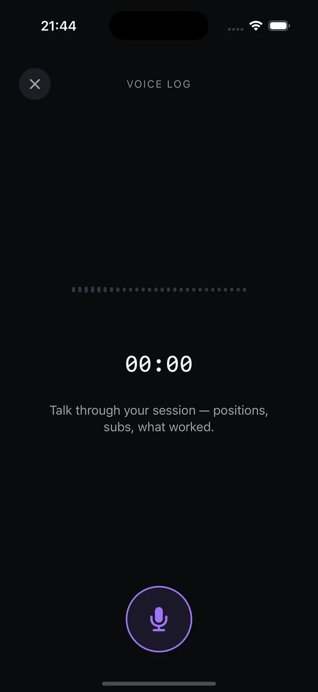
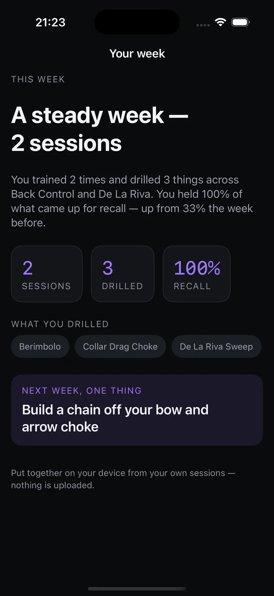
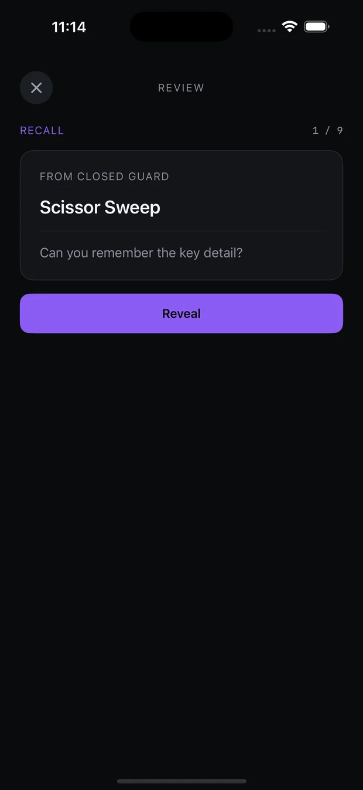
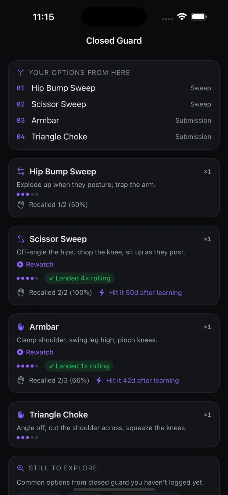
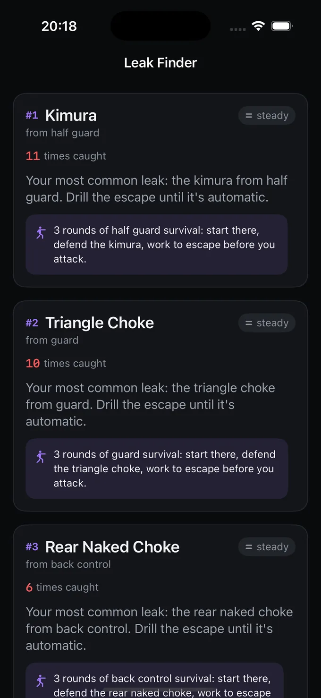
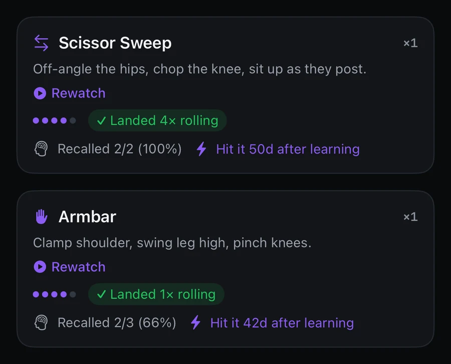
The syllabus the room is already teaching
A journal that only knows what you told it is half a product. Your gym is running a plan — a block of closed-guard attacks this month, guard retention the next — and until now that plan lived on a whiteboard and in your instructor’s head, with no connection to anything you wrote down.
Frame takes the block the room is actually teaching and counts your own logging against it. The gym publishes; you accept once; every session after that marks itself off. Nothing about the arrangement leaves your phone.
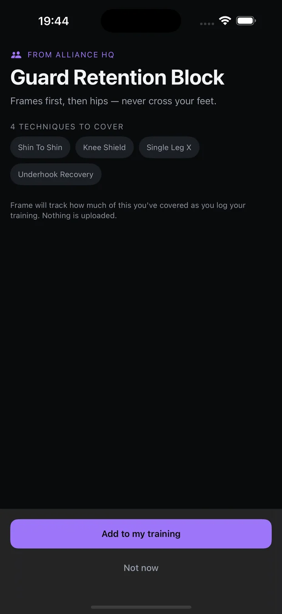
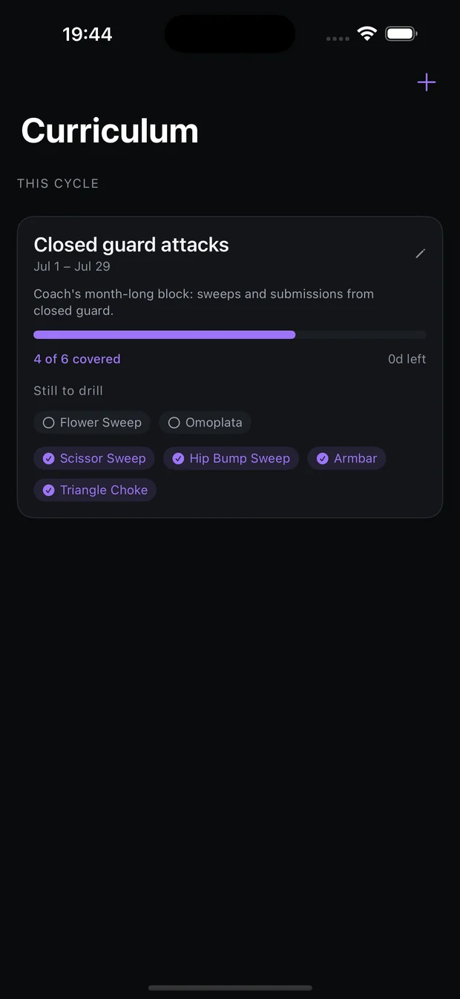
The progress you can’t feel
Six months of training feels like nothing from the inside. You are the same person, tapping to the same people, and the improvement is real but far too slow to notice at the speed you live it.
Every decision on this page serves one thing: make the progress you cannot feel countable, so the people who would otherwise drift have something to come back for. Not more features — more people still on the mat a year from now.
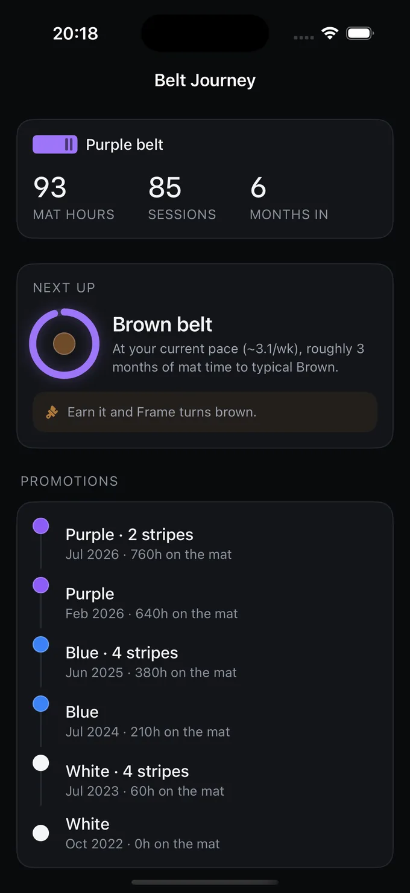
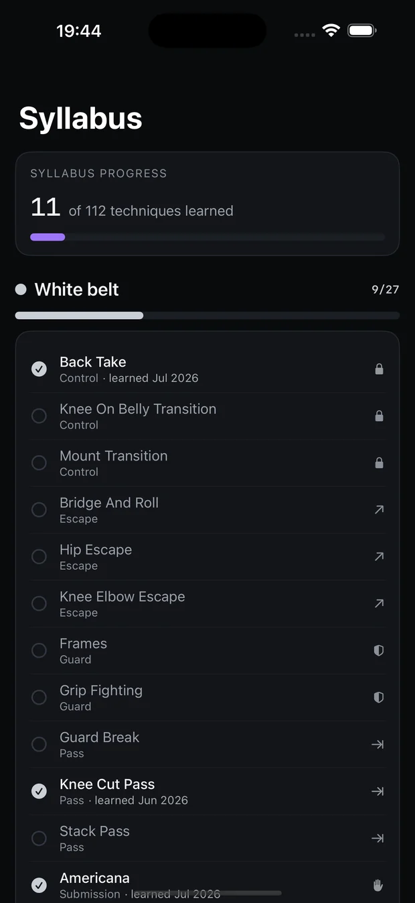
Made before the app existed.
+Kept
- A thirty-second voice log, transcribed on-device
- Recall timed to the forgetting curve
- Your training history, private and exportable
−Cut
- Typing up a session after training
- A social feed to scroll
- Your training history living on our servers
We scoped Frame typing-first, with voice as a nice-to-have. Every test said the same thing: if logging costs more than thirty seconds, nobody does it — and a journal nobody keeps is worthless. So voice became the product and typing the fallback. The exact opposite of how we’d planned it.
Scope. What is public here is the athlete's app — the first surface of a longer system, and the only part we will show until it has earned the next. The work behind it, and who it is being built with, stays off the site on purpose.